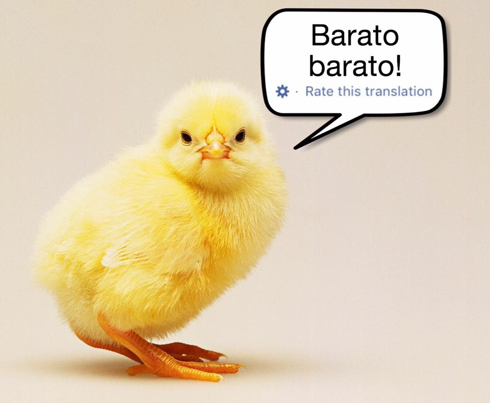
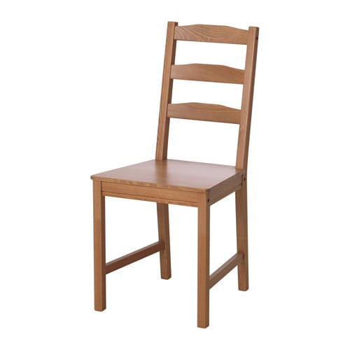
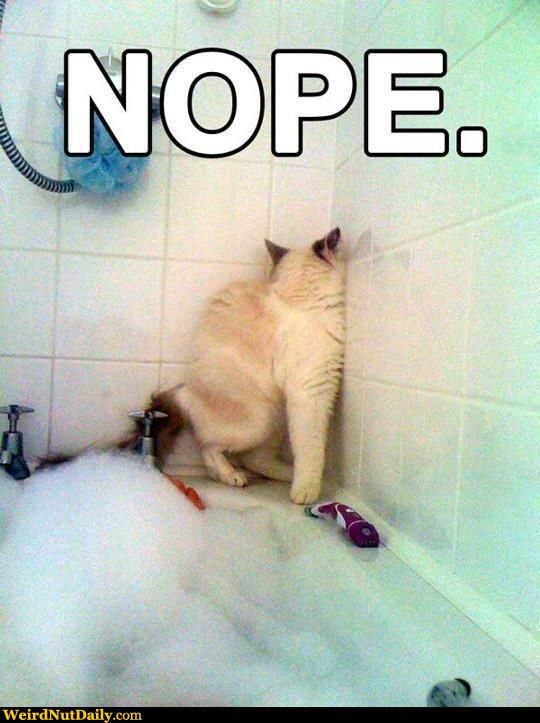

 --- ### It's grade change and exception request season - Please check out my guide to grade change and exception requests before sending one! - <https://sites.google.com/view/matthewzaslansky/regrades> --- # Semantics and Pragmatics: Words in Worlds ### Matt Zaslansky - LIGN 101 --- ### Last time, we talked about meaning, more broadly - Truth in sentences - Ambiguity - Entailment - "Shades of meaning" - Connotation vs. Denotation --- ### Today, we're going to drill into words a bit more, then talk about conversation --- ### Today's Plan - Connotation vs. Denotation continued - Gradient meaning! - Word Meaning Relationships - Word Sense - Lexical Semantics - Pragmatics and the Cooperative Principle --- --- ### Let's try some sets - New, Novel, Contemporary, Up-To-Date, State-of-the-Art, Recent - Offended, insulted, outraged, butthurt, upset - Father, Dad, Papa, Daddy --- ### Some words have connotations that associate them with specific contexts - "inner city" has a specific racial connotation in general use - "I live in Central Park West in NYC, inner city life isn't for everybody" - "Lib" has a specific political connotation in general use - "Bernie Sanders is a well known lib politician" --- ### Sometimes, we take steps to avoid a negative connotation --- ## Euphemism An indirect and "pretty" way to refer to something unpleasant or embarrassing or with a negative connotation --- ### Sample Euphemisms - "We neutralized three combatants" rather than "We killed three enemy fighters" - "We expect another round of downsizing" rather than "You all are gonna get fired". - "Could you point me to the powder room?" rather than "I have to defecate immediately." - "The children were placed in a [tender-age shelter](https://apnews.com/dc0c9a5134d14862ba7c7ad9a811160e)" rather than "We stuck the children in a detention camp". - This was the [ADS Word of the Year](https://www.americandialect.org/tender-age-shelter-is-2018-american-dialect-society-word-of-the-year) for 2018 --- ### Connotations aren't universally shared! - The same word may have different connotations among different groups - What's offensive to one group of people might be the neutral term to another - 'We prefer the term...' - People may not be aware of the connotations of words they're using - 'We've decided not to have kids' vs. 'We're childfree' - ... and most importantly... --- ### Connotations can change over time - Imbecile, Idiot, Slow, Retarded, Mentally Handicapped, Developmentally Disabled - This phenomenon (euphemisms turning into negative terms then being replaced) is called the "Euphemism Treadmill" --- ### Torture your local millenials and Gen-Xers - "Oh, I always wondered what the internet was like in the late 1900s" - "The world of cell phones was very different at the turn of the century" - "Instructors used overhead projectors as late as last century" --- ### Connotations can do a *lot* of work <img class="r-stretch" src="humorimg/butt_dial_booty_call.jpg"> --- ### The lines here are blurry - "Butt dial" and "Booty call" may be two different compounds. - Booty text? Butt Text? - Or are they Adjective+Noun pairs? - Does "thin" mean the same thing as "gaunt"? - When does "idiot" stop meaning "intellectually disabled person" and start meaning "stupid person"? - **It's hard to figure out which of many word options carries the best choice of meaning** --- ### This can lead to Semantic Change - Where words start with one meaning and develop a new one - This can cause a new word sense, or just an overall change in meaning - Think 'influencer' or ' mid' --- ... But even single words are a bit hard to define --- # Semantic Prototype Theory --- ### We have ideas about what words mean - "Bird" - "Chair" --- ### We also have strong intuitions about whether a word describes an object or not. - ... but these intuitions are not binary ("yes" vs. "no") --- ### Let's test this! --- ### What is a bird? --- <section class="clicker"></section> ### On a scale from A (Most) to E (Least), how bird-like is this... --- <section class="clicker"></section> ### On a scale from A (Most) to E (Least), how bird-like is this... <img class="r-stretch" src="img/bird_nightingale.jpg"> --- <section class="clicker"></section> ### On a scale from A (Most) to E (Least), how bird-like is this... <img class="r-stretch" src="img/bird_ostrich.jpg"> --- <section class="clicker"></section> ### On a scale from A (Most) to E (Least), how bird-like is this... <img class="r-stretch" src="img/bird_penguin.jpg"> --- <section class="clicker"></section> ### On a scale from A (Most) to E (Least), how bird-like is this... <img class="r-stretch" src="img/koala.jpg"> --- <section class="clicker"></section> ### On a scale from A (Most) to E (Least), how bird-like is this... <img class="r-stretch" src="img/bird_kiwi.jpg"> --- <section class="clicker"></section> ### On a scale from A (Most) to E (Least), how bird-like is this... <img class="r-stretch" src="img/bird_swan.jpg"> --- ### It's not just birds --- ### What is a chair? --- <section class="clicker"></section> ### On a scale from A (Most) to E (Least), how chair-like is this... <img class="r-stretch" src="img/chair_lounger.jpg"> --- <section class="clicker"></section> ### On a scale from A (Most) to E (Least), how chair-like is this... <img class="r-stretch" src="img/chair_hand.jpg"> --- <section class="clicker"></section> ### On a scale from A (Most) to E (Least), how chair-like is this... <img class="r-stretch" src="img/chair_ironthrone.jpg"> --- <section class="clicker"></section> ### On a scale from A (Most) to E (Least), how chair-like is this... <img class="r-stretch" src="img/chair_wiggle.jpg"> --- <section class="clicker"></section> ### On a scale from A (Most) to E (Least), how chair-like is this... <img class="r-stretch" src="people/ericbakovic.jpg"> --- <section class="clicker"></section> ### On a scale from A (Most) to E (Least), how chair-like is this... <img class="r-stretch" src="img/chair_disc.jpg"> --- <section class="clicker"></section> ### On a scale from A (Most) to E (Least), how chair-like is this... <img class="r-stretch" src="img/chair_ball.jpg"> --- <section class="clicker"></section> ### On a scale from A (Most) to E (Least), how chair-like is this... A series of pizza boxes duct-taped together to a sittable height --- <section class="clicker"></section> ### On a scale from A (Most) to E (Least), how chair-like is this...  --- ### A 'Prototype' An example of a given word or meaning which is "central" to the category, a "better example" of the idea. --- ### This captures a number of intuitions - The Pope is pretty far from the prototype for "Bachelor" - An emu is pretty far from the prototype for "Bird" - A stack of pizza boxes is pretty far from the prototype for "Chair" --- <img class="wide" src="img/ravioli_sandwich_dumpling.jpg"> (Credit to Emily Atkinson, University of Michigan) --- ### So, even within a word, meaning can be a bit gradient - ... and a single word can refer variably to many things --- # Word Meaning Relationships --- ### Words have meanings - Different words have related meanings - ... and we find it helpful to talk about those relationships by classifying them --- ### Word Relationships in 101 - Synonym/Antonym - Homonym/Homophone - Hyponym/Hypernym - Metonymy --- ## Synonym A words which shares the same denotational meaning, but with different spoken form - e.g. Cop/Police Officer, Sick/Ill, Sofa/Couch - The usage may be slightly different, but they 'mean' the same thing --- ### "Opportunity Drawing" - UCSD bans raffles - They are legally complicated under California law - Instead, we have "opportunity drawings" - ü§¶ü誂Äç‚ôÇÔ∏è --- ## Antonym A word which has a (nearly) opposite denotational meaning - e.g. sick/healthy, happy/sad, dead/alive, do/undo - "exactly" opposite is hard, but nearly opposite is fine --- ### Let's find some antonyms - Always - Coming - From - Take - Me - Down --- <img class="r-stretch" src="memes/evil_santana.jpg"> --- ## Hyponym/Hypernym - A word which is a specific instance of a broader class - e.g. Poodle/Dog, Laptop/Computer, iPad/Tablet, Skyscraper/Building - The greater class is a "hypernym" - "X is a type of Y": X are hyponyms, Y is the hypernym --- ## Metonymy When word X, related to word Y, is used to represent the same meaning as Y. - Beijing has rejected the offer (Beijing == Chinese Gov't) - We speak several tongues in this classroom (Tongue == Language) --- <img class="r-stretch" src="humorimg/and_my_axe.jpg"> --- <section class="clicker"></section> ### Which word is a synonym of "large" as in "most mountains are large"? A) Small B) Big C) Large (as in "He was paid 200 large ($200,000) to switch companies") D) Large (as in "A massive corporation and a small startup were both bidding for spectrum. Large won, as always.") E) Size --- ### Which word is a synonym of "large" as in "most mountains are large"? A) Small B) <correct>Big</correct> C) Large (as in "He was paid 200 large ($200,000) to switch companies") D) Large (as in "A massive corporation and a small startup were both bidding for spectrum. Large won, as always.") E) Size --- <section class="clicker"></section> ### Which word is a hypernym of "sofa" A) Sectional B) Loveseat C) Cushion D) Furniture E) Living Room --- ### Which word is a hypernym of "sofa" A) Sectional B) Loveseat C) Cushion D) <correct>Furniture</correct> E) Living Room --- <section class="clicker"></section> ### Which of the following is an example of a metonymic use A) France in "I spent last summer in France" B) The White House in "The White House has a large security perimeter around it" C) Hagyeong in "Hagyeong said it's OK, so we'll use her place" D) The Dean in "We'll have to see if the Dean approves" E) Geisel in "Provided that Geisel agrees, we'll finalize the new library policy next week" --- ### Which of the following is an example of a metonymic use A) France in "I spent last summer in France" B) The White House in "The White House has a large security perimeter around it" C) Hagyeong in "Hagyeong said it's OK, so we'll use her place" D) The Dean in "We'll have to see if the Dean approves" E) <correct>Geisel in "Provided that Geisel agrees, we'll finalize the new library policy next week"</correct> --- ## Homonym A word which shares the same spoken and written form, but has a different meaning - e.g. Bank (river)/Bank (institution), Mug (coffee)/Mug (street robbery), Phone (iPhone)/Phone ([t] or [≈ã]) - **Homonyms are words which are spelled the same and sound the same but have different senses** --- ## Homophone A word which shares the same spoken form, but has a different meaning *and is spelled differently* - Homonym is a Hyponym of Homophone. - e.g. they're/there, but/butt, banned/band, to/too --- ## The 'Same words' can have different meanings - The fact that one word can have many meanings is called **polysemy** --- ### Polysemy is a BIG problem - Roger busted the bank. - Is Roger a toddler with a piggy-bank, or an agent with the SEC? - The fireplace was lit. - Best fireplace ever! --- # Polysemy --- ### Word Sense The specific meaning of a word being used in a given situation --- ### Many words have multiple senses --- <img class="r-stretch" src="img/rock_medusa.jpg"> --- ### Fit - She fit the package into the over-full trunk - She's fit to work on your project, given her background - She's having fits about the new deadline - She's quite fit for her age - That fit nicely into my schedule - She fits in well in San Diego --- ### Hit - I hit the dragon with an arrow - SchwaCo stock hit $500 a share - Jiaqi loves to hit the golf course on Fridays - The mafia hit stunned the local government - The fingerprints had three hits on old records - I hit on the dragon at the sleazy bar - I hit up the dragon for some gold until payday --- ### Oh no. --- ### Verbs use different phrase structures - We talked about how some verbs don't take an object - "I dreamed" - Some verbs take an object always - "I hit the dragon" - Some verbs take two objects - "I baked Jessica a cake" - **Different verbs demand different arguments** --- ## Argument Some element of a sentence which helps complete the principal meaning of the sentence. - **Matt** hit **the dragon** - **Xinyao** baked **Riyam** **a cake** - **Maria** fired **six rounds**. --- ### It gets worse... --- ### Different verb *senses* demand different arguments --- ### Hit (strike) "I hit the dragon with an arrow" - Thing doing the hitting - Thing being hit - How the hitting is done (manner, or instrument) --- ### Hit (a value) "SchwaCo stock hit $500 a share" - Thing hitting the level/goal/landmark - The level/goal/landmark - *No instrument argument is possible* - *"SchwaCo stock hit $500 a share with a good economy" --- ### Hit (go to activity) "Jiaqi loves to hit the bowling alley with his friends" - Person going to the activity (animate) - Activity - *Doesn't take an inanimate subject or an instrument* - *"The ball hit the links on weekends" - *"Andy loves hitting the ballfield with his bat" --- ### Hit on (make sexual advances) "Sherry hit on Steve at the party" - Person making the advances - Person hit on - *No instrument is permissible* - ?"Oishani hit on Jorge with a bad joke" --- ### Hit up (to request) "I hit up the dragon for some gold" - Person making the request - Request - Requested from - *All three arguments are required* - "I hit up the dragon" (For?) - "I hit up for money" (Who?) - "Hit up for money" (???) - Can't be ditransitive (*"I hit up the dragon some gold") --- ### We can think of every verb sense as having a "Frame" - A set of arguments which it expects - ... which combine to give the overall meaning of the sentence - This is often called a 'subcategorization frame' - These are *lexically specific* - **This information can be seen as a part of the verb's meaning** --- ### Every verb has a frame - The [PropBank Project](http://verbs.colorado.edu/propbank/) has been working to produce frames for every verb in large chunks of text - [Here's the list of frames by verb](http://verbs.colorado.edu/propbank/framesets-english-aliases/) --- ### Knowing this frame is *very* useful for processing text - Different sets of arguments can imply different verb senses - "Verb sense disambiguation" - It helps us understand text better - "Uh oh. There's firing going on. It's the business sense. We should figure out who's doing the firing, who's being fired, and where they're being fired from." - It lets us identify **semantic roles** --- ## Semantic Roles Specific terms for different roles in the sentence --- ### Semantic Roles are tough to define - Your book gives terms like "Agent", "Source", "Experiencer", "Theme", "Goal", "Instrument" - Is the subject in "Darnell fit the package in the trunk" really doing the same thing as in "Darnell fits well at UCSD"? - Is the object in "Andre the Giant threw the ball" really so different than "Andre the Giant threw the wrestler"? - Should we spend hours discussing the details of semantic role labels? ---  --- ### So, we'll just focus on the fact that each verb has a frame - Each frame specifies what arguments the verb expects - ... and that knowledge is very useful for understanding what it all means --- ### We've been talking about meaning in isolation - "What does this verb mean, *everywhere*?" - "What is *always* true about the relation between "up" and "down"?" - "What is *always* true about Y, given X?" --- ### ... but words can mean something different in context - "Can you see?" - "I'm open" - "Take that" - "I feel you" --- ### When meaning stops being about the word and starts being about the situation, we've entered the land of... --- # Pragmatics --- ## Pragmatics The study of meaning in a discourse context --- ### Semantics is abstract - The semantic meaning of a word doesn't depend on the context. - The meaning of "fast" doesn't turn into "slow" in a conversation - We'll get to sarcasm later. - Entailment is true *in every possible universe*. --- ### Pragmatics is contextual - It considers the current conversation - It assumes things about the current world - It uses elements of our situation to 'fill in the blanks' --- ### Everything in pragmatics flows from the idea of discourse - Conversation and linguistic interaction - We have conversations with goals in mind - Social goals - Practical goals - Informational goals - ... and we assume some cooperation --- ### The "Cooperative Principle" helps us accomplish these goals - "I will try to act in such a way as to help the exchange of information, rather than hinder it" - This is not a rule in the sense of grammatical rules, but a guiding principle - It can be broken down into four maxims, developed by H. Paul Grice --- # Gricean Maxims --- ## The Maxim of Quality **"Tell the truth and give accurate information"** - Do not say things you believe to be false - Do not say things you don't know (or have evidence to believe) to be true --- ## The Maxim of Quantity **"Give enough information, but not too much"** - Be as informative as required, but not more so - It's just as uncooperative to give too much information as to give too little --- ## The Maxim of Relation **"Give relevant information and only relevant information"** - Your responses should have *something* to do with the matter under discussion - This is also called the maxim of 'relevance' --- ## The Maxim of Manner **"Be as clear as you can be"** - Don't be obscure when you can avoid it - Avoid ambiguous words or phrasings - Avoid unnecessary wordyness - Quantity is about too much info, Manner is about too many words for too little info - Organize your thoughts --- ### Let's test this... Your Roommate Tasha arrives home, and asks where your other roommate Levon is. You're not sure, but you know Levon left earlier. --- ## The Maxim of Quality **"Tell the truth and give accurate information"** Do not say things you believe to be false Do not say things you don't know (or have evidence to believe) to be true --- ## The Maxim of Quantity **"Give enough information, but not too much"** Be as informative as required, but not more so It's just as uncooperative to give too much information as to give too little --- ## The Maxim of Relation **"Give relevant information and only relevant information"** Your responses should have *something* to do with the matter under discussion --- ## The Maxim of Manner **"Be as clear as you can be"** Don't be obscure when you can avoid it Avoid ambiguous words or phrasings Avoid unnecessary wordyness Organize your thoughts --- ### The lines can be blurry - Manner is when the right of information is presented confusingly or badly - Quantity is when you've *clearly* given too much or not enough information - Relation is when you're giving the right amount of information *about something that doesn't matter to the conversation* - Quantity is when you're giving too much or too little information about what does matter - The boundaries are fluid, and generally, there are multiple maxims being violated at once! --- ## Next time - We'll wrap up Gricean maxims and talk about other elements of pragmatics - Bring meaning, in context --- <huge>Thank you!</huge>